연구 제안서의 핵심을 시각화한 SAFE-H 프로젝트의 단계별 추진 계획입니다.
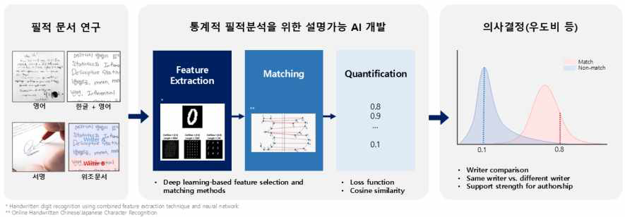
주관적 직관에 의존하던 기존 필적 감정을 객관적 증거와 통계적 신뢰 기반의 AI 체계로 전환하는 통합 프로세스를 구축합니다.
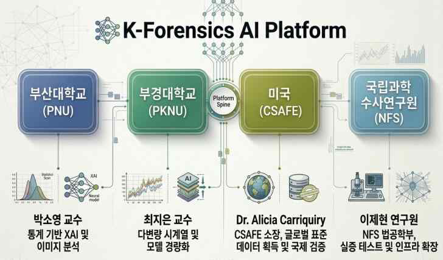
국내외 대학과 수사기관(NFS), 국제 표준 기구(CSAFE)를 잇는 유기적 파이프라인을 통해 한국형 필적 분석 플랫폼의 세계화를 지향합니다.
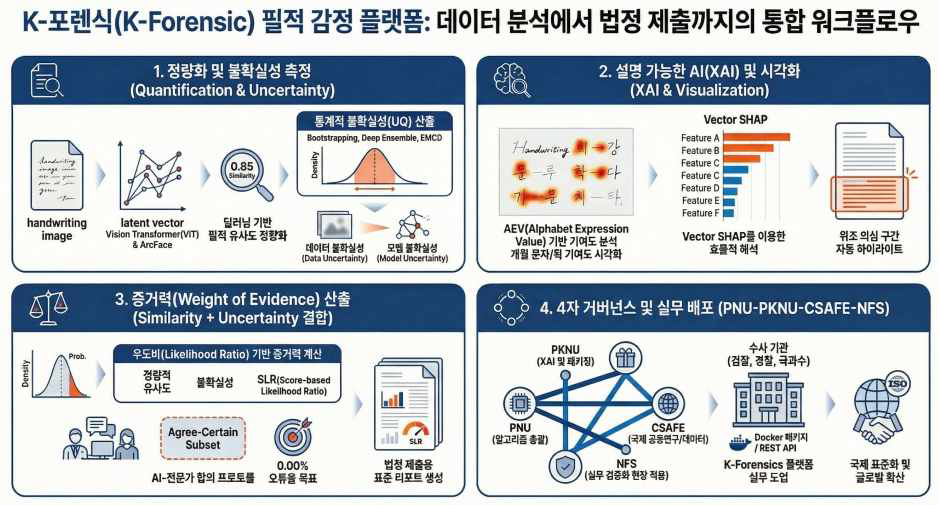
데이터 분석부터 법정 제출용 리포트 생성까지, AI와 전문가가 협업하는 고신뢰 포렌식 워크플로우를 완성합니다.
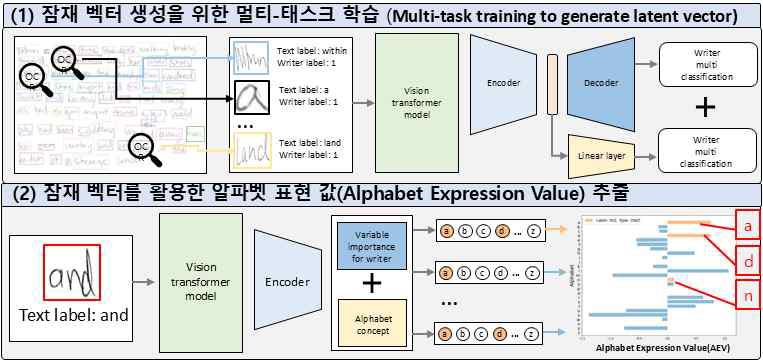
알파벳 표현 수치(AEV)를 활용하여 딥러닝의 블랙박스를 해소하고, 판정의 핵심 근거를 시각적으로 제시합니다.
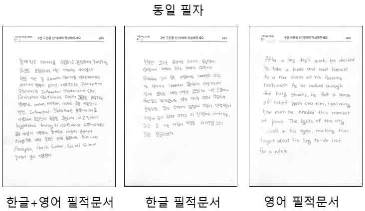
한글 및 8개국어 이상의 방대한 다국어 필적 자산을 연계하여, 언어 독립적인 범용 필적 분석 모델의 기반을 닦습니다.
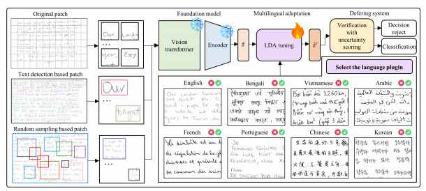
핵심 인코더 가중치는 보존하고 판별층만 학습하는 효율적 접근을 통해, 다양한 언어 환경에 즉각 대응 가능한 경량 모델을 구축합니다.
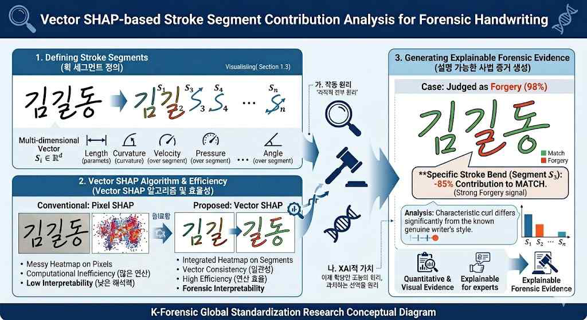
픽셀 단위가 아닌 '획(Stroke)' 단위 기여도를 산출하여, 감정관과 법관이 직관적으로 이해할 수 있는 정량적 증거를 제공합니다.
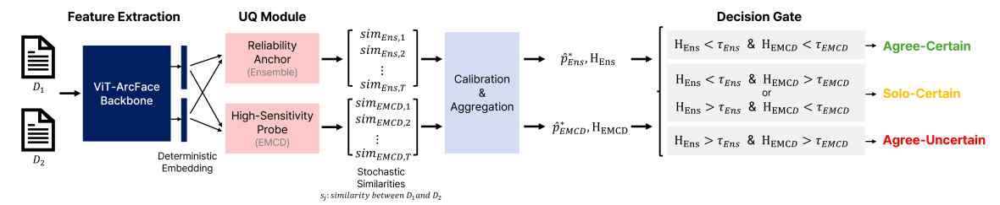
AI의 판단 결과와 함께 그 신뢰도를 통계적으로 산출하여, 오판의 위험을 줄이고 인간-AI 협업의 안전성을 높입니다.
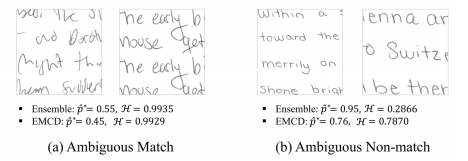
실제 일치/불일치 사례에 대한 정밀 검증을 통해 시스템의 강건성을 확보하고 법과학적 타당성을 입증합니다.
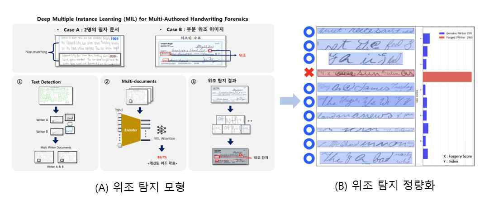
문서 전체뿐만 아니라 특정 단어의 변조를 탐지하는 다중 인스턴스 학습(MIL) 기술로 정밀한 포렌식 분석을 지원합니다.
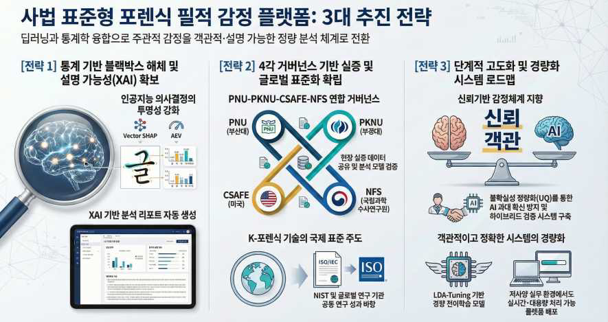
블랙박스 해체 통한 투명성 확보, 글로벌 거버넌스 기반 표준화, 저사양 실무 환경 대응 경량화를 통해 포렌식 AI의 미래를 엽니다.
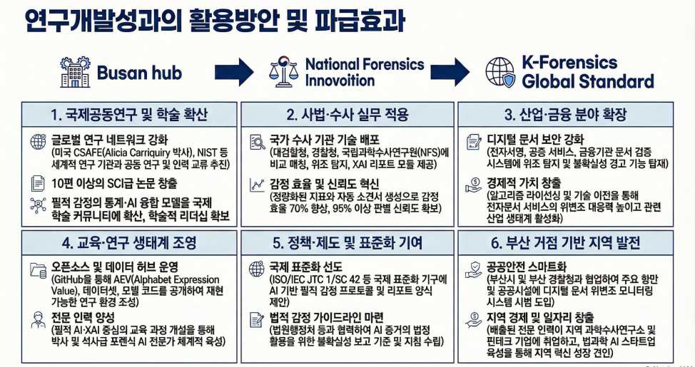
국제 공동연구 및 학술 확산, 사법·수사 실무 적용, 산업·금융 분야 확장 등 전방위적 활용을 통해 K-Forensic의 위상을 높입니다.
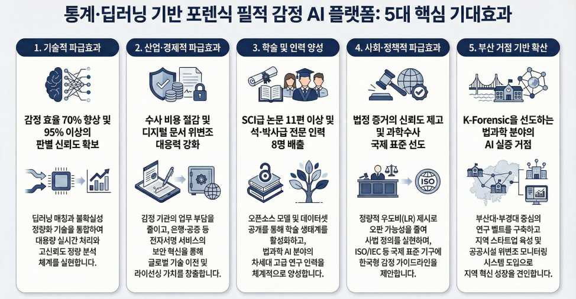
기술적·산업적 파급효과부터 사회적 신뢰 증진까지, 5대 핵심 지표 달성을 통해 과학수사의 지능화 및 대중화를 실현합니다.